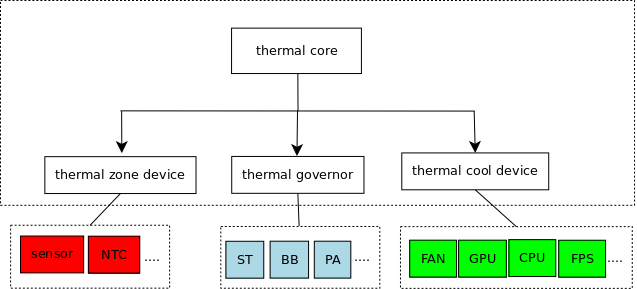
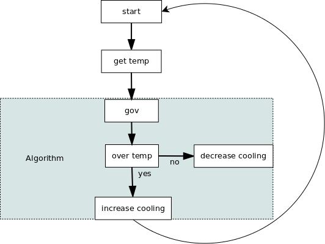

Linux Thermal 是 Linux 系统下温度控制相关的模块，主要用来控制系统运行过程中芯片产生的热量，使芯片温度和设备外壳温度维持在一个安全、舒适的范围。
那下面我们就来一起看看对于温度控制这样一个需求，Linux 内核是怎么实现的。
Thermal 的主要框架 要实现一个温度控制的需求，试想一下我们是不是最少要有获取温度的设备和控制温度的设备这两个最基本的东西？当然附带的也会产生一些使用温度控制设备的策略。
那上面这些东西在 Linux Thermal 框架中怎么体现呢？通过阅读源码我们发现代码中对上面的东西进行了一些抽象。
获取温度的设备：在 Thermal 框架中被抽象为 Thermal Zone Device;
控制温度的设备：在 Thermal 框架中被抽象为 Thermal Cooling Device;
控制温度策略：在 Thermal 框架中被抽象为 Thermal Governor;

Thermal Zone Device 上面说到 Thermal Zone Device 是获取温度设备的抽象，怎么抽象的？终究我们还是要 RTFSC。
1 2 3 4 5 6 7 8 9 10 11 12 13 14 15 16 17 18 19 20 21 22 23 24 25 26 27 28 29 30 31 32 33 34 35 36 37 38 39 40 41 42 43 44 45 46 47 48 49 50 51 52 53 54 55 56 57 58 59 struct thermal_zone_device { int id; char type[THERMAL_NAME_LENGTH]; struct device device; struct thermal_attr *trip_temp_attrs; struct thermal_attr *trip_type_attrs; struct thermal_attr *trip_hyst_attrs; void *devdata; int trips; /* 轮询时间 */ int passive_delay; int polling_delay; int temperature; int last_temperature; int emul_temperature; int passive; unsigned int forced_passive; /* 设备的操作函数 */ struct thermal_zone_device_ops *ops; const struct thermal_zone_params *tzp; struct thermal_governor *governor; struct list_head thermal_instances; struct idr idr; struct mutex lock; struct list_head node; /* 用来循环处理的 delayed_work */ struct delayed_work poll_queue; }; struct thermal_zone_device_ops { /* 绑定函数 */ int (*bind) (struct thermal_zone_device *, struct thermal_cooling_device *); int (*unbind) (struct thermal_zone_device *, struct thermal_cooling_device *); /* 获取温度函数 */ int (*get_temp) (struct thermal_zone_device *, unsigned long *); int (*get_mode) (struct thermal_zone_device *, enum thermal_device_mode *); int (*set_mode) (struct thermal_zone_device *, enum thermal_device_mode); int (*get_trip_type) (struct thermal_zone_device *, int, enum thermal_trip_type *); /* 获取触发点温度 */ int (*get_trip_temp) (struct thermal_zone_device *, int, unsigned long *); int (*set_trip_temp) (struct thermal_zone_device *, int, unsigned long); int (*get_trip_hyst) (struct thermal_zone_device *, int, unsigned long *); int (*set_trip_hyst) (struct thermal_zone_device *, int, unsigned long); int (*get_crit_temp) (struct thermal_zone_device *, unsigned long *); int (*set_emul_temp) (struct thermal_zone_device *, unsigned long); int (*get_trend) (struct thermal_zone_device *, int, enum thermal_trend *); int (*notify) (struct thermal_zone_device *, int, enum thermal_trip_type); };
通过代码我们可以看到，一个能提供温度的设备操作函数主要有 : 绑定函数、获取温度函数、获取触发点温度函数。
绑定函数 : Thermal core 用来绑定用的 , 这个后面会讲 ;
获取温度函数 : 获取设备温度用的，这个也好理解 , 一般 SOC 内部会有温度传感器提供温度，有些热敏电阻通过 ADC 也算出温度，这个函数就是取这些温度值 ;
获取触发点温度函数 : 这个是什么用来做什么呢 ? 这个其实是 thermal 框架里面一个关键点，因为要控制温度，那么什么时候控制就需要有东西来描述，
描述什么时候控制的东西就是触发点，每个 thermal zone device 会定义很多触发点，那么每个触发点的温度就是通过该函数获得；
Thermal Cooling Devices Thermal Cooling Device 是可以降温设备的抽象，能降温的设备比如风扇，这些好理解，但是想 CPU,GPU 这些 Cooling devices 怎么理解呢？
其实降温可以从两方面来理解，一个是加快散热，另外一个就是降低产热量。风扇，散热片这些是用来加快散热，CPU,GPU 这些 Cooling devices 是通过降低产热来降温。
那代码是怎么将这两个方式统一起来呢？
1 2 3 4 5 6 7 8 9 10 11 12 13 14 15 16 17 18 19 20 struct thermal_cooling_device { int id; char type[THERMAL_NAME_LENGTH]; struct device device; struct device_node *np; void *devdata; /* cooling device 操作函数 */ const struct thermal_cooling_device_ops *ops; bool updated; /* true if the cooling device does not need update */ struct mutex lock; /* protect thermal_instances list */ struct list_head thermal_instances; struct list_head node; }; struct thermal_cooling_device_ops { int (*get_max_state) (struct thermal_cooling_device *, unsigned long *); int (*get_cur_state) (struct thermal_cooling_device *, unsigned long *); /* 设定等级 */ int (*set_cur_state) (struct thermal_cooling_device *, unsigned long); };
Thermal Cooling device 抽象的方式是，认为所有的能降温的设备有很多可以单独控制的状态。例如，风扇有不同的风速状态，
CPU/GPU Cooling device 有不同最大运行频率状态，这样当温度高了之后通过调整这些状态来降低温度；
Thermal Governor Thermal Governor 是降温策略的一个抽象 , 主要是根据温度来选择 thermal cooling devices 等级的方法，举个简单的例子，当前的温度升高速很快，选择风扇３档风，温度升高不快，选择１档风。这就是一个 Governor。
1 2 3 4 5 6 7 8 9 10 11 12 13 /** * struct thermal_governor - structure that holds thermal governor information * @name: name of the governor * @throttle: callback called for every trip point even if temperature is * below the trip point temperature * @governor_list: node in thermal_governor_list (in thermal_core.c) */ struct thermal_governor { char name[THERMAL_NAME_LENGTH]; /* 策略函数 */ int (*throttle)(struct thermal_zone_device *tz, int trip); struct list_head governor_list; };
很简单，所有的策略都通过 throttle 这个函数实现，内核已经实现了一些策略，step_wise, user_space, power_allocator, bang_bang 等具体实现算法细节就不展开；
Thermal Core 有了获取温度的设备，有了温控控制的设备，有了控制方法，Thermal Core 就负责把这些整合在一起。下面看一下整合的简单流程。
１．注册函数 ,thermal Core 通过对外提供注册的接口，让 thermal zone device、thermal cooling device、thermal governor 注册进来。
1 2 3 4 5 6 7 8 struct thermal_zone_device *thermal_zone_device_register(const char *, int, int, void *, struct thermal_zone_device_ops *, const struct thermal_zone_params *, int, int); struct thermal_cooling_device *thermal_cooling_device_register(char *, void *, const struct thermal_cooling_device_ops *); int thermal_register_governor(struct thermal_governor *);
２．Thermal zone/cooling device 注册的过程中 thermal core 会调用绑定函数，绑定的过程最主要是一个 cooling device 绑定到一个 thremal_zone 的触发点上
1 2 3 4 5 6 7 8 9 10 11 12 13 14 15 16 17 18 19 20 21 22 23 24 25 26 27 28 29 30 31 32 33 34 35 36 37 38 39 40 41 42 43 44 45 46 47 int thermal_zone_bind_cooling_device(struct thermal_zone_device *tz) { struct thermal_instance *dev; struct thermal_instance *pos; struct thermal_zone_device *pos1; struct thermal_cooling_device *pos2; unsigned long max_state; int result; ... /* thermal_instace 就是绑定之后的实例 */ dev = kzalloc(sizeof(struct thermal_instance), GFP_KERNEL); if (!dev) return -ENOMEM; dev->tz = tz; dev->cdev = cdev; dev->trip = trip; dev->upper = upper; ... sysfs_create_link(&tz->device.kobj, &cdev->device.kobj, dev->name); if (result) goto release_idr; sprintf(dev->attr_name, "cdev%d_trip_point", dev->id); sysfs_attr_init(&dev->attr.attr); ... list_for_each_entry(pos, &tz->thermal_instances, tz_node) if (pos->tz == tz && pos->trip == trip && pos->cdev == cdev) { result = -EEXIST; break; } if (!result) { /* 绑定完了就添加到链表中 */ list_add_tail(&dev->tz_node, &tz->thermal_instances); list_add_tail(&dev->cdev_node, &cdev->thermal_instances); } ... return result; }
３．Thermal core 使能 delayed_work 循环处理 , 使整个 thermal 控制流程运转起来。
1 2 3 4 5 6 7 8 9 10 11 12 13 14 15 16 17 18 19 20 21 22 23 24 25 26 27 28 29 30 31 32 33 static void thermal_zone_device_check(struct work_struct *wrok) { struct thermal_zone_device *tz = container_of(work, struct thermal_zone_device, poll_queue.work); /* 处理函数 */ thermal_zone_device_update(tz); } void thermal_zone_device_update(struct thermal_zone_device *tz) { int count; if (!tz->ops->get_temp) return; /* 更新温度 */ update_temperature(tz);- for (count = 0; count < tz->trips; count++) /* 处理触发点，这里面就会调到具体的 governor */ handle_thermal_trip(tz, count); } static void thermal_zone_device_set_polling(struct thermal_zone_device *tz, int delay) { if (delay > 1000) /* 更改 delayed_work 下次唤醒时间完成轮询 */ mod_delayed_work(system_freezable_wq, &tz->poll_queue, round_jiffies(msecs_to_jiffies(delay))); else if (delay) mod_delayed_work(system_freezable_wq, &tz->poll_queue, msecs_to_jiffies(delay)); else cancel_delayed_work(&tz->poll_queue); }

当温度升高超过温度触发点的话，就会使能对应的 cooling device 进行降温处理，至此 Linux Thermal 相关的一些基本框架就介绍完了。
参考资料 Thermal 内核源码
This is copyright.